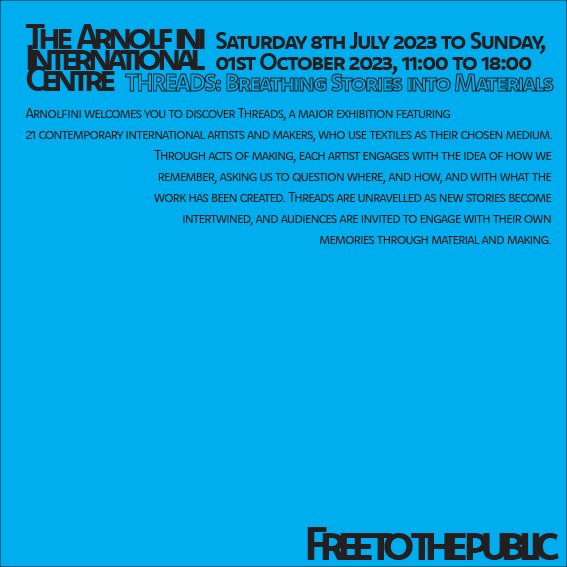

Typographic Systems
Axial

The Axial typographic system is where all elements are organised to the left or to the right of a single axis (Elam, 2007). In my portrayal of the Axial system I have the axis tilted with elements on either side of the axis. Although the axis is invisible the viewer can still percieve the axis line. I opted to use the colour cyan to highlight specific parts of the text to grab the reader's attention. Using the Komet typeface family the three major points of the poster, the place, title of event and date/time are all using the Black SC font whilst the extra information is using the Medium SC font. This creates slight contrast and again guides the reader.
Dilational

The Dilational typographic system is when elements follow a circular central point and/or curve. It's not the most readable system as text will sometimes be upside down since it's following the path of a circle (Czarnecki, 2020). Again using heirarchy to determine the key points of the poster, the place and title of the event, as the main two circles which allow the other elements to radiate out of brings the reader's attention to a starting point which they can then proceed from. I decided to use Komet Bold for all of the text elements in this one and used font size to create contrast.
Radial

In the Radial typographic system every element emanates from a single point of focus (Czarnecki, 2020). In my example of this system the point of focus is the cyan semi circle. The circle draws the viewer in and allows the viewer to explore the lines of text emanating from that point.
Random

The Random typographical system is a system in which elements have no specific relationship to one another (Elam, 2007). There are ways to position and style the elements to bring them to the viewers attention. In my interpretation of this system I have the dark bold letters bring in the viewer's attention and then they can explore the additional lines of the lighter gray text beneath.
Transitional
The Transitional typographic system doesn't follow a formal way of putting the letters and words together. In the examples I have found of transitional designs some of the letters are often closely banded together (Elam, 2007). I decided to play around with banding in my design using it in the top left and bottom right of my poster. The main elements are stacked at the top left of the page moving the viewers eye downwards to the bottom right with the final element acting as a finishing point.
Grid
The Grid typographic system is made up of vertical and horizontal divisions. Known as the Swiss typographic system or "Swiss Style" it was popularised in the 20th century by many graphic designers (Budrick, 2020). In my example of the grid layout I have divided all the elements into vertical thirds.
Bilateral

In the Bilateral typographic system, text elements are symmetrically organized along a central axis (Elam, 2007). I made my axis out of a line of text and made the rest of the text symmetrical on both sides of the axis. I gave the axis line of text the cyan colour so that it wouldn't be lost behind the rest of the text going across it and made the title of the event bold to have the viewer read from top to bottom.
Modular
The Modular typographic system employs recurring structures to segment the content, with these structures encompassing a variety of elements, with shapes being the most prevalent (Elam, 2007). I used circles for my design with the text elements beginning from within them. Not all the circles I used are the same size. Most notably the last circle is the smallest as I wanted it to resemble a full stop to the page.